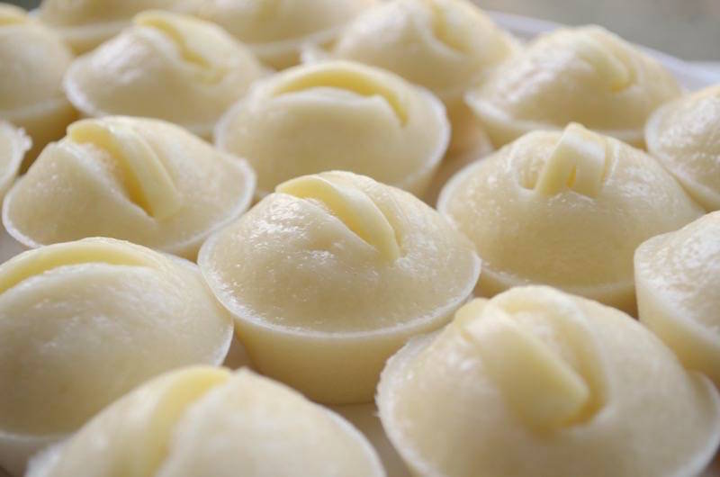

Puto Recipe

Puto is a classic Filipino steamed rice cake often enjoyed during celebrations. Here's how to make it:
Ingredients:
- 2 cups rice flour
- 1 cup sugar
- 1 tablespoon baking powder
- 1/2 teaspoon salt
- 1 1/2 cups coconut milk
- 1 teaspoon vanilla extract
- Grated coconut for topping (optional)
- Salted egg, sliced, for topping (optional)
Instructions:
- In a large mixing bowl, combine rice flour, sugar, baking powder, and salt.
- Add coconut milk and vanilla extract to the dry ingredients. Mix until smooth.
- Prepare your puto molds by greasing them lightly with oil or lining them with banana leaves.
- Pour the batter into the molds, filling each about 2/3 full.
- Top each mold with a slice of salted egg, if desired.
- Steam the puto over medium heat for about 15-20 minutes, or until a toothpick inserted into the center comes out clean.
- Remove the puto from the steamer and let them cool slightly before serving.
- Serve warm or at room temperature, topped with grated coconut if desired.
- Enjoy your delicious homemade Puto!